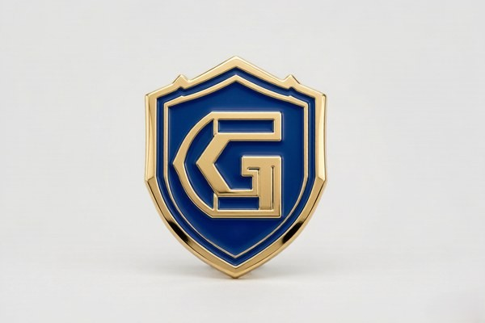
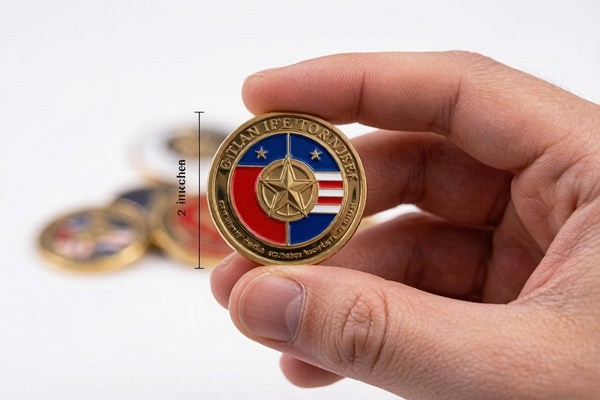

Standard Challenge Coin Sizes
Most challenge coins fall into a few well-established size ranges. Understanding these ranges gives you a useful starting point, even if your final choice is a custom size.
| Size | Diameter | Typical Use |
|---|---|---|
| Small | 1.25″ – 1.75″ | Ball markers, hat badges, simple logos |
| Medium | 1.75″ – 2″ | Most challenge coins and unit insignia |
| Large | 2″ – 2.75″ | Commemorative and display pieces |
| Extra large | 2.75″ – 3″+ | Presentation coins and detailed art |
The 1.75-inch to 2-inch range is the workhorse of the challenge coin world, because it balances enough space for a clear emblem with a size that still carries comfortably in a pocket. If you are unsure where to start, a 2-inch round coin is the safest all-round choice.
How to Measure a Challenge Coin
Challenge coins are measured by diameter, the distance across the widest part of the coin. For round coins, this is straightforward — measure straight across the face. For custom die-cut shapes, the measurement usually refers to the widest point of the design, and the actual footprint can vary from one shape to another.
If you are comparing your design to an existing coin, measure the existing coin's diameter first. Then print your design at that exact size and evaluate it before ordering. This simple step — measuring and printing at actual size — is the single most effective way to avoid ordering a coin that turns out too small or too large for its detail.
Common Coin Thickness
Standard challenge coins run about 2.5 to 3 mm thick, which feels substantial in the hand without being bulky. This is the default thickness for most soft enamel and hard enamel coins, and it works well for coins meant to be carried in a pocket.
3D coins run deeper — typically 3 to 6 mm — to make room for sculpted, multi-level relief. The extra depth is what allows an eagle or emblem to physically rise off the surface. Functional coins like bottle openers are also reinforced to 3 or 4 mm so the opener holds up to use.
As a rule, thinner coins feel more like keepsakes, while thicker coins feel more like medals or awards. Neither is better in general — the right thickness depends on the style of coin and how it will be used.
Size and Detail: The Trade-Off
More area means more room for detail, but it also means your design has to fill that space. A small coin forces simplicity, which is often a good thing — bold, simple designs read best at small sizes. A large coin with too little artwork looks empty and unfinished, so the detail should scale up with the diameter.
Text is where this trade-off bites hardest. Lettering that is crisp on a 2-inch coin can become illegible on a 1.5-inch coin. Keep text at least 6 mm tall, and remember that fine script fonts rarely survive the reduction. If your design is text-heavy, err toward a larger coin to protect legibility.
Choosing Size by Application
The best size depends on how the coin will be used. Here is how the choice breaks down by common use case:
- Pocket and carry coins: 1.5 to 2 inches, thin enough to carry comfortably and rugged enough to handle daily wear.
- Unit and team insignia: 1.75 to 2 inches, the traditional size for military and organizational coins.
- Awards and recognition: 2 to 2.5 inches, large enough for a premium, display-worthy presentation.
- Commemorative and anniversary pieces: 2.5 inches and up, with more room for detail and a stronger presence.
Matching the size to the purpose also affects how the coin is received. A pocket-sized coin feels like something to carry and trade; a larger coin feels like something to keep and display. Both have their place, and the choice should reflect the occasion.
Custom Shapes and Die-Cut

Size is only half the story — shape is the other half. Round is the traditional default, but custom die-cut shapes that follow the outline of your logo almost always look more professional than forcing a logo into a circle. A shield-shaped emblem on a shield-shaped coin, or a star-shaped logo on a star-shaped coin, reads as intentional and polished.
Custom shapes do come with a small additional cost, since the die is cut to your exact outline, but the visual payoff is usually worth it. When you send a logo for a custom shape, the factory uses the artwork's outline to define the coin's edge, so the design and the shape reinforce each other.
3D Coins and Deeper Relief
If you want real depth, 3D relief is the answer. A 3D coin is sculpted with raised, multi-level detail, and it needs more thickness — typically 3 to 6 mm — to accommodate the relief. The result is a coin that catches light and shadow in a way a flat coin simply cannot.
The trade-off is that 3D coins cost more and take slightly longer to produce, because of the additional sculpting and tooling. For bold emblems, mascots, and crests where dimension matters more than flat color, that extra cost is almost always justified. For designs with lots of fine text or photographic detail, a flatter coin is usually the better call.
How Size Affects Cost
Larger coins generally cost more, for the simple reason that they use more metal and more enamel. The relationship is not always linear, though — a very small coin with extremely fine detail can actually be more expensive per piece than a mid-size coin, because tiny detail is harder to produce reliably.
Thickness also affects cost, since thicker coins and 3D coins require more material and, in the case of 3D, more tooling. If budget is a primary concern, a standard 2-inch soft enamel coin at 2.5 to 3 mm is the most cost-effective configuration. Your quote will make the cost implications of each size clear before you commit.
Size and Packaging
Size also determines packaging options. Standard 1.5 to 2-inch coins fit neatly into velvet pouches, PVC sleeves, and presentation boxes, which are the most common and affordable packaging choices. Larger or thicker coins may require a bigger box, which can add a little cost.
If you plan to display the coin, consider a presentation box or a coin stand, both of which show off the design nicely. For coins meant to be carried, a simple pouch or sleeve keeps them protected without adding bulk. Packaging is a small detail, but it completes the presentation and protects the coin before it reaches its new owner.
Small Coins: Making the Most of Limited Space
Small coins — those under 1.75 inches — present a specific design challenge, and handling it well is what separates a crisp little coin from a cluttered one. On a small coin, every element has to earn its space, because there simply is not room for a busy design. The most successful small coins focus on a single strong symbol and one short line of text at most.
Small coins are also where boldness matters most. Thin lines and small text disappear at this scale, so lean into thick strokes, high contrast, and simple shapes. A small coin with a strong, simple design often reads better than a larger coin with a complex one, precisely because the constraints force clarity.
Common small-coin uses include ball markers, hat badges, and subtle brand marks. A magnetic golf marker is a perfect example — its roughly one-inch size works because the design is a single, recognizable symbol. If your design is detailed, resist the urge to shrink it; a slightly larger coin is almost always the better fix.
Large Coins: When Bigger Is Better
Large coins — 2.5 inches and up — open up real estate for detail, but they come with their own rules. A large coin with too little artwork looks empty and unfinished, so the design has to scale up with the diameter. Think of it as filling a canvas: a small emblem floating in the middle of a large coin reads as a mistake, not a choice.
Large coins are where commemorative and award pieces really shine, because there is room for a full emblem, a meaningful inscription, and decorative borders without crowding. A large coin also has more presence — it feels substantial in the hand and displays beautifully, which is why honors and anniversaries gravitate toward bigger sizes.
The trade-off is portability. A 3-inch coin is not something people carry casually in a pocket; it is a display piece. Match the size to the occasion: big for the shelf, medium for the pocket. If you want a coin that serves both purposes, a 2-inch coin is the practical middle ground.
Size and Its Effect on Design Elements

Size does not just change how much you can fit — it changes how individual elements behave. Borders that look elegant on a large coin can look chunky on a small one. Text that is crisp at 2 inches becomes illegible at 1.5 inches. Enamel colors that blend beautifully on a large field can mush together when squeezed into a small space.
This is why it is so important to evaluate a design at its actual size rather than on a screen. A design that looks perfect zoomed in on a monitor can reveal problems the moment it is printed at coin scale. Print it, hold it at arm's length, and check that every element still reads. It is the fastest way to catch sizing problems before they become production problems.
As a rule, scale elements proportionally rather than trying to fit more in. If a logo has fine detail that will not survive at the coin's size, simplify the logo for the coin rather than shrinking the coin. The goal is a design that was made for the size it will actually be.
Choosing the Right Thickness for Durability
Thickness affects more than feel — it affects how the coin holds up over time. A 2 mm coin is fine for a keepsake that will be handled gently, but a coin that will be carried daily or traded frequently benefits from the extra rigidity of 3 mm. Thicker metal resists bending and edge damage, which matters for coins that live in pockets and bags.
For functional coins, thickness is non-negotiable. A bottle opener coin, for example, is reinforced to 3 or 4 mm so the opener holds up to repeated use without flexing or breaking. Similarly, 3D coins run thicker to protect the sculpted relief. If your coin has a job to do, make sure the thickness matches the job.
Coin Size Standards Across the Industry
While there is no single governing body that dictates challenge coin sizes, a few de facto standards have emerged over decades of practice, and understanding them helps you speak the same language as your manufacturer. The 1.75-inch and 2-inch round coins are by far the most common, because they fit comfortably in a pocket and provide enough room for a clear emblem. The 2.5-inch and 3-inch sizes are the standard for commemorative and display pieces.
Military coins, which account for a large share of the market, historically settled around the 1.75-inch to 2-inch range, and that influence shaped the broader industry. Ball markers and golf coins, by contrast, cluster around 1 inch to 1.25 inches because they need to sit on a green without disturbing play. Knowing where your coin falls in these conventions gives you a reliable starting point.
Thickness has similar conventions. The 2.5 to 3 mm standard comes from striking a balance between durability and pocket comfort, and it has held for years because it simply works. 3D coins, functional coins, and some commemorative pieces exceed it, but for the vast majority of coins, the standard thickness is the right call.
How Coin Size Affects the Overall Design
Size does not exist in a vacuum — it shapes every other choice in the design. A small coin forces a simplified emblem and a short motto; a large coin invites a full composition with a border, an inscription, and decorative detail. Before you finalize the artwork, settle on the size, because trying to fit a large-coin design onto a small coin (or vice versa) is where most sizing mistakes begin.
The size also affects the enamel and plating choices. On a large coin, a field of enamel has more surface area, which can show subtle variations in the fill more readily, so a clean, even enamel job matters more. On a small coin, the plating lines between colors are closer together, so a crisp die is essential. The same design, produced at two different sizes, can succeed at one and struggle at the other.
The practical takeaway is to design for the size you will actually order. Print the artwork at the final size, evaluate it honestly, and adjust the design — not the size — if something does not read. A coin that was designed for its dimensions looks intentional; a coin that was squeezed to fit looks compromised.
Coin Weight and Feel
Beyond size and thickness, the weight of a coin shapes how it feels in the hand. Most challenge coins are made from zinc alloy, brass, or steel, and each material carries a different heft. Zinc alloy is the most common and keeps coins lightweight and affordable, while brass and steel add weight and a more solid, premium feel.
A heavier coin tends to feel more substantial and "earned," which is why awards and commemorative pieces often lean on brass or steel. A lighter zinc alloy coin is easier to carry in a pocket all day, which suits trade-and-carry coins. If the feel of the coin matters to you, mention it when ordering — the material and thickness can both be adjusted to hit the weight you want.
Thickness and material work together here. A 2 mm zinc coin feels very different from a 4 mm brass coin, even at the same diameter. Think of it as the difference between a poker chip and a casino-quality plaque: both are round and roughly coin-sized, but the heft communicates entirely different things.
Choosing the Right Size: A Quick Checklist
When you are ready to lock in a size, run through this short checklist to make sure the dimensions fit the design:
- Print the design at the exact proposed size and check that text and detail are legible at arm's length.
- Confirm the coin's purpose — carry, trade, award, or display — and match the size to it.
- Check that the design fills the space without crowding the border.
- Consider the thickness and material for the weight and feel you want.
- Ask for a quote at a couple of sizes to see the cost difference before committing.
Frequently Overlooked Sizing Details
A few sizing details get overlooked surprisingly often, and they can catch you off guard if you are not watching for them. The first is the relationship between size and the number of colors in your design. A small coin with too many colors can turn muddy, because the color areas become too small to hold their own. If your design is colorful, a slightly larger coin gives each color room to breathe.
Another easy miss is the border. Every coin needs a little breathing room between the design and the edge, and that margin is proportionally larger on a small coin than on a large one. If your design runs all the way to the edge, detail gets trimmed by the border, so leave a comfortable margin and account for it in the artwork.
Finally, consider how the coin will be held and displayed. A coin meant to be pinned or displayed on a stand may need a slightly different shape or a thicker edge than a coin meant to be carried. Think through the end use before locking in the size, and you will avoid the small surprises that can derail an otherwise great coin.
Frequently Asked Questions
What is the most common challenge coin size?
The 1.75-inch to 2-inch range is the most common, and a 2-inch round coin is the safest all-round choice for most designs.
How thick is a standard challenge coin?
Standard coins run 2.5 to 3 mm thick. 3D coins run deeper, typically 3 to 6 mm, to accommodate sculpted relief.
Can I order a custom shape?
Yes. Custom die-cut shapes follow the outline of your logo and usually look more professional than forcing a logo into a circle.
Does a bigger coin cost more?
Generally yes, because larger coins use more metal and enamel. Your quote will show the cost for each size before you commit.
Conclusion
Size and thickness are the foundation of a challenge coin's feel, and they deserve as much thought as the artwork itself. Match the dimensions to the purpose — small and rugged for carry coins, large and substantial for awards and commemoratives — and print your design at actual size before you order. A coin that is sized well feels intentional from the moment it leaves the hand.
Ready to size up your design? Get a free quote and digital proof, and we will help you dial in the perfect dimensions for your coin.
A coin that is sized well feels intentional from the moment it leaves the hand — substantial without being bulky, detailed without being crowded, and easy to carry or display exactly as its purpose demands. Spend a few minutes on the dimensions before you commit, and the rest of the design falls into place around them.
The nice thing about sizing is that it is almost always adjustable before production. Work with your manufacturer to compare a couple of sizes and thicknesses, feel the difference in a sample if you can, and settle on the combination that best fits your design and your budget. A little care here saves a lot of second-guessing later, and it is the difference between a coin that feels right and one that feels like an afterthought.